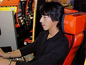
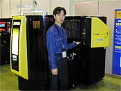

待望の続編、『F355 Challenge 2』が好評稼働中！FIORANO、LAGUNA-SECA、SEPANG、NURBURGRING、ATLANTAが新たに追加され、さらにアーケードの筐体（ツイン筐体のみ）で出したベストタイムを当サイトのネットランキングにエントリーさせることもできます！ →【詳細】
 ドリームキャスト版『Ｆ３５５チャレンジ』の最後の隠し要素がついに判明！その名も『F355
Challenge MOVIE』！ ドリームキャスト版『Ｆ３５５チャレンジ』の最後の隠し要素がついに判明！その名も『F355
Challenge MOVIE』！このムービーはアーケード版『Ｆ３５５チャレンジ』開発前にチームの意思統一を図るために作られたムービーです。約4年前に制作されたそうですが、今観ても見劣りしない映像になっています。 このムービーをご覧になるには、必ず『Ｆ３５５チャレンジ』のGD-ROMをセットしたドリームキャストから当サイトにアクセスして下さい。 →【詳細】
 発売が待たれるアーケード版『Ｆ３５５チャレンジ２
インターナショナル コース エディション』（2001年1月稼働予定）の新たな仕様が判明！ 発売が待たれるアーケード版『Ｆ３５５チャレンジ２
インターナショナル コース エディション』（2001年1月稼働予定）の新たな仕様が判明！ アーケード版『Ｆ３５５チャレンジ２ インターナショナル コース エディション』で出したタイムをメモリーカードにセーブすれば、ドリームキャスト版『Ｆ３５５チャレンジ』と同様にネットランキングへのエントリーが可能です！（データをセーブできるのはツイン筐体のみになります）アーケード版で腕を磨けばドリームキャスト版のベストタイムの更新も夢じゃない!? 先日『Ｆ３５５チャレンジ２ インターナショナル コース エディション』に搭乗してSEPANGで見事な走りを見せてくれた影山正美さんがはやくもネットランキングに殴り込み！2000年11月15日現在、ノーマル部門で第9位にランクインしています！ →【詳細】
 先日、BBSで対戦ケーブル（価格：
3000円(税別)）が手に入りづらいという書き込みを拝見しました。『Ｆ３５５チャレンジ』等の対戦ケーブル対応ソフトの増加に伴い、現在セガでは随時追加生産をしています。店頭で見かけない場合はご注文いただくか、「DreamcastDirect」での販売をご利用ください。 先日、BBSで対戦ケーブル（価格：
3000円(税別)）が手に入りづらいという書き込みを拝見しました。『Ｆ３５５チャレンジ』等の対戦ケーブル対応ソフトの増加に伴い、現在セガでは随時追加生産をしています。店頭で見かけない場合はご注文いただくか、「DreamcastDirect」での販売をご利用ください。→【詳細】
AM2 of CRI 最速の男大橋一文氏と『Ｆ３５５チャレンジ』で一緒に走る事ができるチケットが今オークションにかかっております。欲しいですよね？是非落札して下さい！詳しくはこちらにアクセスして下さい！（入札は2001年1月8日をもって終了いたしました。）
お待たせいたしました！影山正美さんのサイン入り色紙＆ポートレートの当選者を発表します。世界ランキングでは惜しくもベスト10から落選してしまいましたが、近いうち必ずベスト10に返り咲くことでしょう！（そうですよね？影山さん！）それでは発表します！
上杉さん、TADAMUNEさん、チュインさん、がにめでさん、本当におめでとうございます！色紙もポートレートも、大変貴重なものです。大切にしてくださいね！
 壁紙ダウンロードサービスに待望の新作を追加しました！ 壁紙ダウンロードサービスに待望の新作を追加しました！こちらはセガサイバークラブ期間中に配布された壁紙ですが、皆さまの熱いご要望にお応えして、再度配布したいと思います！ なお、このサービスはドリームパスポートではご利用になれません。あしからずご了承ください。 →【詳細】
全日本GT選手権等でおなじみの影山正美さんの走行データダウンロードサービスがスタートします！（走行データ収録の様子は週刊!!AM2 Vol.47をご覧下さい） 今回は『Ｆ３５５チャレンジ ２』完成間近と言うことで、ソフト2研に遊びに来てくれた影山正美さんにテストランをしていただきました。コースは影山さんが今年6月に実際に走行された“SEPANG”です。 さぁ、みなさん！さっそくダウンロードして、プロの走りを体験してください！ →【詳細】
“SEPANG”の走行データ収集に協力してくれた影山さんが、休憩時間に記念として「F355 Challenge the official web site」＆「週刊!!AM2」読者のためにサインをくれました！今回は『Ｆ３５５チャレンジ』メインビジュアルをプリントしたサイン入りポートレートと、サイン色紙を各2枚ずつ、合計4名の方にプレゼントしたいと思います！ご希望の方は必ずメールかハガキに以下の項目を記入のうえご応募下さい。
●メールの場合● 必ずこちらからお送り下さい。 ●ハガキの場合● 〒144-8531 東京都大田区羽田1-2-12 （株）セガ 内 （株）CSK総合研究所 第2ソフト研究開発部 F355 Challenge the official web site「影山正美命」係 応募締切は11月20日（月）到着分まで有効とさせていただきます。発表は11月28日（火）の「F355 Challenge the official web site」及び「週刊!!AM2 Vol.48」でおこないます。お楽しみに！
11月2日（木）大田区産業プラザ PIOで開催された「株式会社セガ プライベートショー2000 -冬-(Sega Private Show 2000 -Winter-)」に『Ｆ３５５チャレンジ２ インターナショナル コース エディション』が出展されました！ この日のもようは今週の週刊!!AM2に詳しく掲載されているので是非ご覧になって下さい。『Ｆ３５５チャレンジ』シリーズのアシスタントディレクター、小岩さんのコメントも掲載されています。『Ｆ３５５チャレンジ』ファン必見です！ →【詳細】
約2ヶ月にわたって開催されてきた『Ｆ３５５チャレンジ』タイムアタック大会も今週の結果発表をもって最後となります。ラストの舞台は、そう、「FIORANO」です！ 期間中に対象コースで1位〜5位に入賞して、超豪華賞品と他では手に入らないソフト2研公認の認定証を手に入れたのははたして誰でしょうか!? →【詳細】
いつも『Ｆ３５５チャレンジ』ネットランキングをご利用いただき、まことに有り難うございます。このたび走行データのアップロードに関して変更がありましたので、お知らせいたします。 今まで、走行データをアップロードするにはネットランキングで20位以内にランクインしなければならなかったのですが、今回の改正により、99位の方までアップ ロードできるようになりました。これからはより多くの方の走行データを参照で きるようになります。 今後も皆さんのご意見を取り入れて、『Ｆ３５５チャレンジ』ネットランキング のさらなる活性化を図りたいと思います。 2000年10月20日 Ｆ３５５チャレンジチーム
約2ヶ月にわたって開催されてきた『Ｆ３５５チャレンジ』タイムアタック大会もいよいよ今週で最後！ラストの舞台は、そう、「FIORANO」です！ 期間中に対象コースで1位〜5位に入賞すれば、超豪華賞品と他では手に入らないソフト2研公認の認定証をプレゼントします！AT（ノーマル）、AT（チューンド）、semi-AT（ノーマル）、semi-AT（チューンド）の計4部門を開催します！ みなさん、ふるってご参加ください！ →【詳細】
『Ｆ３５５チャレンジ』タイムアタック大会開催中！期間中に対象コースで1位〜5位に入賞すれば、超豪華賞品と他では手に入らないソフト2研公認の認定証をプレゼントします！AT（ノーマル）、AT（チューンド）、semi-AT（ノーマル）、semi-AT（チューンド）の計4部門を開催します！ みなさん、ふるってご参加ください！ →【詳細】
『Ｆ３５５チャレンジ』をご愛用いただきまことにありがとうございます。 毎回皆様の好戦により、すばらしい記録が生まれているタイムアタック大会ですが、この度、こちらの手違いにより、ノーマル部門（AT、semi-AT）で告知しておりました賞品をお送りすることができなくなってしまいました。 誠に申し訳ございませんが、下記のように賞品を変更させていただきます。（【チューンド部門（AT、semi-AT）】の方の変更はございません。） 入賞なさった皆様には大変なご迷惑をおかけいたしますが、ご理解とご協力をお願いしたします。 今後も「週刊!!AM2」にて、ランキングやプレゼントなど盛りだくさんの企画を考えておりますので、応援をよろしくお願いいたします。 ■賞品変更【ノーマル部門（AT、semi-AT）】
※4・5位の認定証は変更ございません。 →【詳細】
お待たせいたしました！片山右京さんのサイン入り走行データプリントの当選者を発表します。今回も競争率はかなり高めでしたが、そんななか、見事当選されたラッキーな方はいったい誰なのでしょうか…？ それでは発表します！
星野さん、おめでとうございます！片山右京さんの走行データと共に大切に保管してくださいね！
『Ｆ３５５チャレンジ』タイムアタック大会開催中！期間中に対象コースで1位〜5位に入賞すれば、超豪華賞品と他では手に入らないソフト2研公認の認定証をプレゼントします！AT（ノーマル）、AT（チューンド）、semi-AT（ノーマル）、semi-AT（チューンド）の計4部門を開催します！ みなさん、ふるってご参加ください！ →【詳細】

ご好評をいただいている片山右京さんの走行データダウンロードですが、ダウンロード終了まであと8日となりました。まだダウンロードしていないという方はお早めに！ →【詳細】 ※走行データをダウンロードするには、ドリームキャストからアクセスして下さい。 今回、片山右京さんに走行データを提供していただいた際に、走行結果のプリントにサインをいただきました！これを「F355 Challenge the official web site」をご覧の皆さまの中から1名様にプレゼントしたいと思います！ 走行データ+走行データのサイン入りプリント。この2点をそろえて持っていれば、まさに右京ファン羨望の品といえるでしょう！ご希望の方は、メールに 件名：「片山右京さんサイン希望」係
を明記のうえ、こちらからご応募ください。締切は2000年10月2日（月）到着分、発表は10月3日（火）のこのコーナーにて。 皆さん、ふるってご応募ください！
『Ｆ３５５チャレンジ』タイムアタック大会開催中！期間中に対象コースで1位〜5位に入賞すれば、超豪華賞品と他では手に入らないソフト2研公認の認定証をプレゼントします！AT（ノーマル）、AT（チューンド）、semi-AT（ノーマル）、semi-AT（チューンド）の計4部門を開催します！ みなさん、ふるってご参加ください！ →【詳細】
『Ｆ３５５チャレンジ』タイムアタック大会開催中！今回からいよいよ隠しコースのタイムアタック大会が始まります。期間中に対象コースで1位〜5位に入賞すれば、超豪華賞品と他では手に入らないソフト2研公認の認定証をプレゼントします！AT（ノーマル）、AT（チューンド）、semi-AT（ノーマル）、semi-AT（チューンド）の計4部門を開催します！ みなさん、ふるってご参加ください！ →【詳細】
今週の週刊!!AM2（Vol.39：2000年9月19日号）は『Ｆ３５５チャレンジ』の記事が満載！
→【詳細】
お問い合わせをいただきましたタイムアタック大会入賞賞品発送日についてお答えいたします。発送はタイムアタック大会入賞申告締め切り日から2週間以内に皆さまにお送りいたします。 お待たせして申し訳ありませんが、しばらくお待ち下さい。
『Ｆ３５５チャレンジ』タイムアタック大会開催中！期間中に対象コースで1位〜5位に入賞すれば、超豪華賞品と他では手に入らないソフト2研公認の認定証をプレゼントします！今回のコースはLONG-BEACHです。AT（ノーマル）、AT（チューンド）、semi-AT（ノーマル）、semi-AT（チューンド）の計4部門を開催します！ みなさん、ふるってご参加ください！ →【詳細】
『Ｆ３５５チャレンジ』発売記念プレゼントに多数のご応募、まことにありがとうございます。お待たせいたしました！いよいよ当選者の発表です！
当選された新井さん、清野さん、楠原さん、米沢さん、五十嵐さん、本当におめでとうございます！
連日熱いバトルが繰り広げられている“NETWORK RACE”にまたもソフ ト2研メンバーが参戦！しかも今回はドリームキャストマガジンの『Ｆ３５５チャレンジ』担当ライター、政綱大介さんの参戦も決定！ 最高峰のメンバーが9月14日（木）の23:00に集結します。今から腕を磨いて当日に備えておいてください！ ■日程：9月14日（木） ■時間：23:00〜24:00まで ■Country表記：AM2（ソフト2研）、DCM（ドリマガ）
『Ｆ３５５チャレンジ』タイムアタック大会開催中！期間中に対象コースで1位〜5位に入賞すれば、超豪華賞品と他では手に入らないソフト2研公認の認定証をプレゼントします！今回のコースはSUZUKAです。AT（ノーマル）、AT（チューンド）、semi-AT（ノーマル）、semi-AT（チューンド）の計4部門を開催します！ みなさん、ふるってご参加ください！ →【詳細】
特定の条件を満たさないと登場しなかった5つの隠しコースが、コマンド入力でお手軽に出現！ →【詳細】
『Ｆ３５５チャレンジ』タイムアタック大会開催中！期間中に対象コースで1位〜5位に入賞すれば、超豪華賞品と他では手に入らないソフト2研公認の認定証をプレゼントします！今回のコースはSUGOです。AT（ノーマル）、AT（チューンド）、semi-AT（ノーマル）、semi-AT（チューンド）の計4部門を開催します！ みなさん、ふるってご参加ください！ →【詳細】
「コース概要」に新コース「FIORANO」の出現条件と概要をアップしました。
去る8月25日（金）23:00〜24:00にかけて『Ｆ３５５チャレンジ』の“NETWORK RACE”にソフト 2研大崎副部長と『Ｆ３５５チャレンジ』開発チームのメンバーが参戦しました！当日の様子は「週刊!!AM2」に掲載してあります。ぜひご覧下さい！ →【詳細】
連日熱いバトルが繰り広げられている“NETWORK RACE”にソフト2研メンバーが意地とプライドをかけて参戦します！今回は大崎副部長と『Ｆ３５５チャレンジ』チームから最速の開発者が登場！ この機会に日頃鍛錬したドライビングテクニックを試してみませんか？腕に自信のある方は、チャレンジしてみてください！ 日程：8月25日（金） 時間：23:00〜24:00まで
ランブリングマーケット「サンストリート亀戸」で、全日本GT選手権事務局が後援する「サンストGTフェスティバル2000」に『Ｆ３５５チャレンジ』が出展されます！詳しくはサンストリートのホームページをご覧下さい！
【イベント内容】 ・有名ドライバートークショー ・GTマシン展示コーナー ・ニッコーラジコン会場 ・PASSIONミニライブ ・レースクイーン撮影会 ほか
「コース概要」に新コース「SEPANG」の出現条件と概要をアップしました。また、「プレイモード内」の「ARCADE」と「OPTIONS」に裏技を1点ずつ掲載しました。内容は…？見てからのお楽しみです！
去る8月12日（土）に元F1ドライバーの片山右京さんがソフト2研に遊びに来てくれました。『Ｆ３５５チャレンジ』の走行データ収録にも協力していただいたので、後日（9月5日から）このサイトで配信する予定です。この様子は今週の「週刊!!AM2」に掲載されているので今すぐチェックしてください！ →【詳細】
「第1回 英国モータースポーツショー」に『Ｆ３５５チャレンジ』が出展されます！最新、話題のレーシングカーの展示やレーシングドライバーのトークショーなど、見どころ満載のイベントです！ぜひ行ってみてください！ →【詳細】
『Ｆ３５５チャレンジ』タイムアタック大会を開催します。期間中に対象コースで1位〜5位に入賞すれば、他では手に入らない超豪華賞品をプレゼントします！今回のコースはMOTEGIです。AT（ノーマル）、AT（チューンド）、semi-AT（ノーマル）、semi-AT（チューンド）の計4部門を開催します！ みなさん、ふるってご参加ください！ →【詳細】
お待たせしました！プロドライバー走行データのダウンロードがいよいよスタートしました！これから毎週一人ずつ追加していきます！第一弾は鈴木亜久里さんです！ →【詳細】
「週刊!!AM2」に『Ｆ３５５チャレンジ』アシスタントディレクター小岩さんのインタビューが掲載されました！ →【詳細】
ますます盛り上がりをみせる「F355 Challenge the official web site」にBBSが誕生しました！「ch@b talk」や「どこでもチャット」に加え、これからますますコミュニケーションの可能性が広がります！ みなさん、『Ｆ３５５チャレンジ』の話題で熱く盛り上がってください！ ※ご利用前には必ず利用規約をお読みください。

本日いよいよ発売された、ドリームキャスト版『Ｆ３５５チャレンジ』！皆さんもうプレイしましたか？今回、発売を記念して、プロデューサー鈴木裕のサイン入りポートレート、プロドライバーのサイン入り色紙（鈴木亜久里さん、高木虎之介さん、影山正彦さん、道上龍さん）を各1名様にプレゼントします！ ご希望の方は、 件名：『Ｆ３５５チャレンジ』発売記念プレゼント係
を明記のうえ、こちらからご応募ください。締切は2000年9月11日（月）、発表は9月12日（火）のこのコーナーにて。 皆さん、ふるってご応募ください！
この夏、ドリームキャスト版『Ｆ３５５チャレンジ』の体験イベントが各地で目白押しです！それでは一挙にご紹介しましょう！
8月3日（木）『Ｆ３５５チャレンジ』の発売を記念したイベントを下記の内容で実施します。
7月25日（火）に東京ジョイポリスで行なわれた『Ｆ３５５チャレンジ』走行データ収集会の模様が放送されるぞ！ 東京ジョイポリスでの鈴木亜久里さんと高木虎之介さんの熱い走りやドリームキャスト版『Ｆ３５５チャレンジ』の内容を紹介するので必ずチェックしてね！
7月27日（木）17時から、東京ジョイポリスで影山正彦さん、道上龍さんと 『Ｆ３５５チャレンジ』で対戦できます！ 詳しくは下記をご覧下さい。
→【詳細】
7月23日（日）10時より東京都池袋の池袋GIGOでセガのエンターテイメン ト・サイバースペースnet@の体験イベントが開催されるぞ！ 詳しくはこちら へGO！
→【詳細】
合計355名様にフェラーリ オフィシャルグッズプレゼント!!フェラーリF1ドライバーバリチェロのサイン入りグッズが当たる!! 『Ｆ３５５チャレンジ』のソフトのたすき部分1枚を切り取り、官製ハガキまたは店頭の応募ハガキに貼って、氏名、年齢、性別、郵便番号、住所、電話番号、職業、E-mailアドレス、ご購入のショップ名を明記の上ご応募ください。 →【詳細】
→【詳細】
→【詳細】
→【詳細】 BACK |
|||||||||||||||||||||||||||||||||||||||||||||||||||||||||||||||||||||||||||||||||||||||||||||||||||||||||||||||||||||||||||||||||||||||||||||||||||||||||||||||||||||||||||||||||||||||||||||||||||||||||||||||